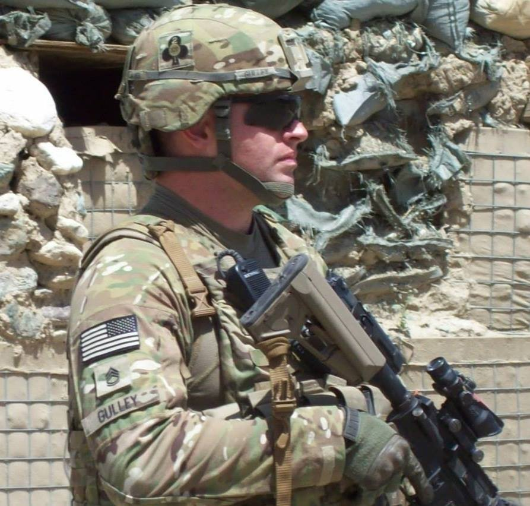
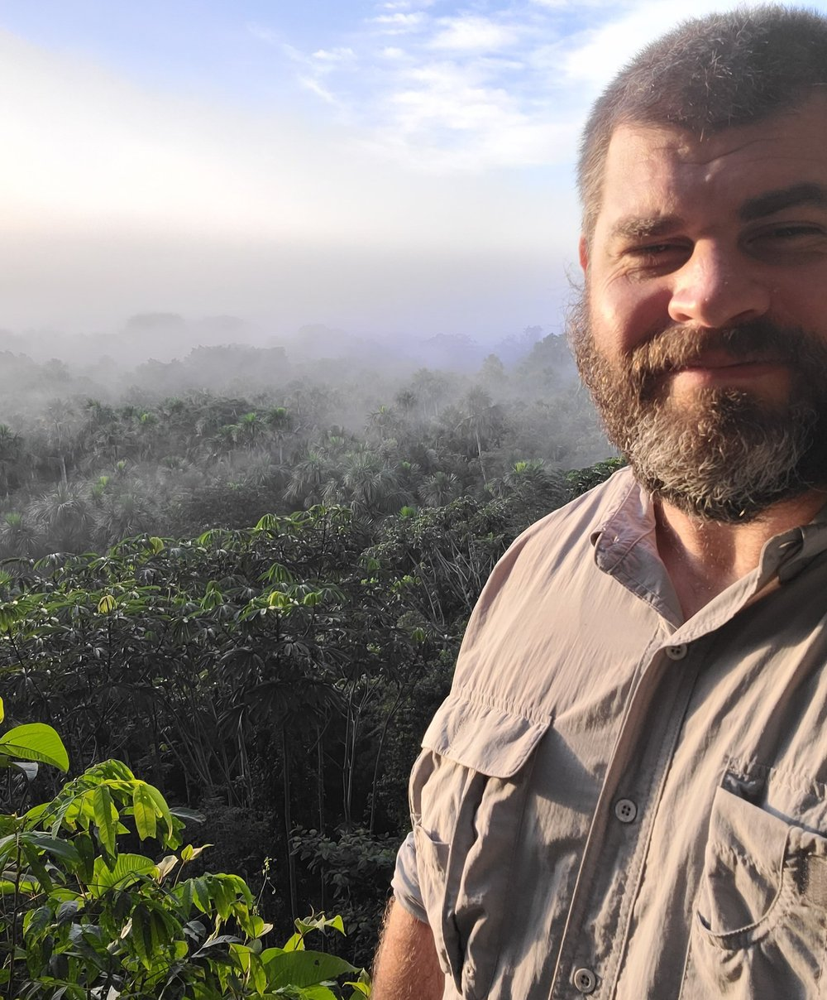
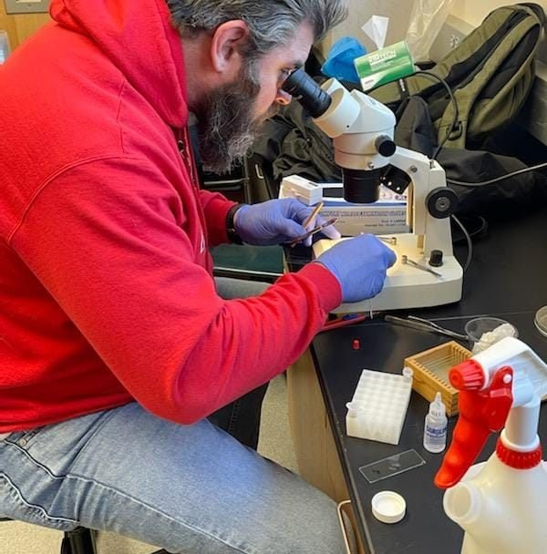

My Story
It Wasn't Always This Way...
Born and raised in the small town of Poplar Bluff, Missouri; I came from a family with a deep connection to military service. The names of my ancestors can be found on the rolls of U.S. servicemen in nearly every conflict in this nation’s history, from my great-great-great-great-great grandfather, Captain Johann Shmick, who served in the Revolutionary War, to my great uncle Arthur Cochran who served in the 3rd Army during WWII, to myself, a veteran of Iraq and Afghanistan, military service was all I ever had planned.
Serving in Operation Enduring Freedom, Kunar River Valley, Afghanistan, 2013
Injuries and illnesses from decades of military service had caught up to me and forced me to cut my military career short. This experience had inspired me to pursue medicine, even though I knew it was a longshot, I decided to enroll into college and start my academic career. Unlike high school, I loved being a college student! I was on the right track to enter medical school when I signed up for a research trip to the Peruvian Amazon in an effort to check the block on research required for medical school admission. Little did I know that this trip would change my entire trajectory. I fell in love with the idea of research, working with wildlife, and fighting to conserve the natural world. I had never felt such a sense of purpose. It wasn’t long before I decided that changing my path was the right thing to do. I completely switched gears from medicine to pursue a future in the world of science.
Trail 25, Los Amigos Biological Station, Peru
Upon returning from Peru I continued my work towards medical school for only a short time before I made the decision to abandon medicine and focus purely on science. My first foray into purely scientific research was in the lab of Dr. Kyle Benowitz, who is currently studying the genetics of parentage using burying beetles. My specific task was to try to determine the genetic mechanisms responsible for mandible development in the first instar larvae of two species. Ultimately we were unable to determine the mechanism in the short amount of time I had to attempt it, but I learned advanced microscopy using wide field and confocal fluorescent microscopes, as well as how to stain tissues.
The Benowitz Lab, APSU
My undergraduate career ended in May of 2022 when I earned my Bachelor of Science degree in general biology! During my undergraduate career I had a ton of great experiences, learned a lot about who I was, and got to take part in many great organizations on campus. Including service as the student senator of the College of STEM, the chapter president of the Pre-Professional Health Society, and I was inducted into two honor societies, NSLS, and Beta Beta Beta National Biological Honor Society. I also served on the Student Organization Council Finance Committee. Just before I graduated I made the decision to pursue a Master of Science degree at Austin Peay. I was accepted into the lab of Dr. Katie Haase, an ecologist who specializes in thermal ecology regarding mammals, primarily bats. I dove headfirst into the science of bats during the summer of 2022, learning to mist net, radio tag and track them, and identify various local species. This has brought me to where I am today! Along with science I have numerous other passions, including photography and writing.